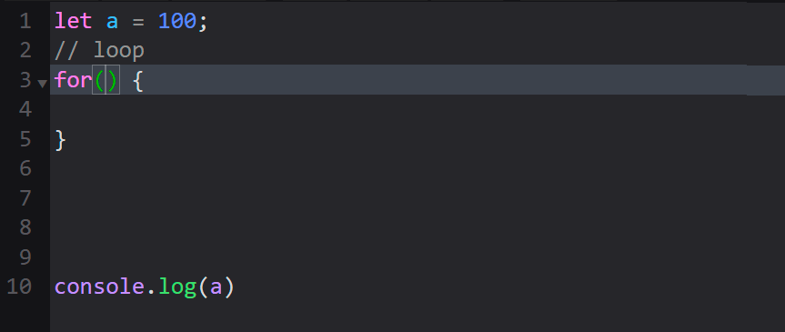
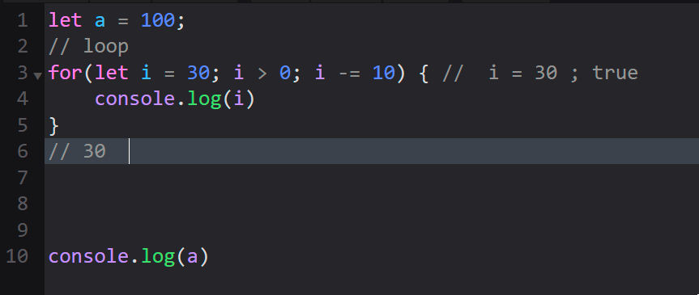
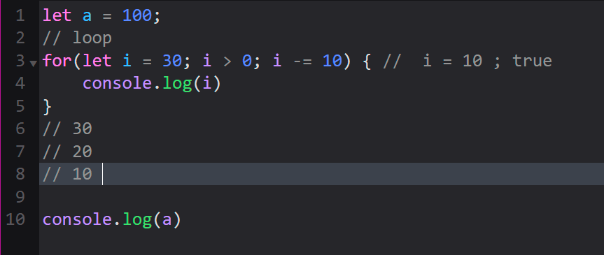

Цикл
Выполнение блока кода по условию.
При boolean true условия блок выполняется.
При boolean false условия выход из блока цикла.
Блок выполняется несколько раз
Итерация - каждое новое выполнение блока кода
Итерация кода происходит с изменением значения некоторой переменной
Как правило в качестве такой переменной используют индекс - счетчик числа итераций.
Анимация на примере цикла For
Задание индекса, условия и шага цикла

Выполнение итераций

Выход из цикла

While
while (условие ) { блок кода }
let index = 0;
while (index < 10) {
index += 1;
};
Do While
do { блок кода } while (условие )
Код в блоке гарантированно выполнится хотя бы один раз.
let index = 0;
do {
index += 1;
}
while (index < 10);
Цикл используется для проверки пароля
For
for (индекс; условие; изменение индекса ) { блок кода }
Объявление переменной, условие выхода из цикла и изменение индекса сгруппированы внутри круглых скобок
Особый порядок работы круглых скобок:
- Объявление переменной происходит один раз перед работой цикла
- Условие выхода из цикла проверяется перед выполнением кода в блоке для каждой итерации
- Изменение индекса осуществляется после завершения каждой итерации кода в блоке (после выполнения последней строки кода блока).
for (
let index = 0;
index < 10;
index += 1
) {
}
For Of
for (переменная; of массив ) { блок кода }
Условие выхода из цикла и шаг задаются автоматически
Переменной поочередно присваивается значение каждого элемента массива
let arr = [2, 1, 3];
for (let index of arr) {
console.log(index)
}